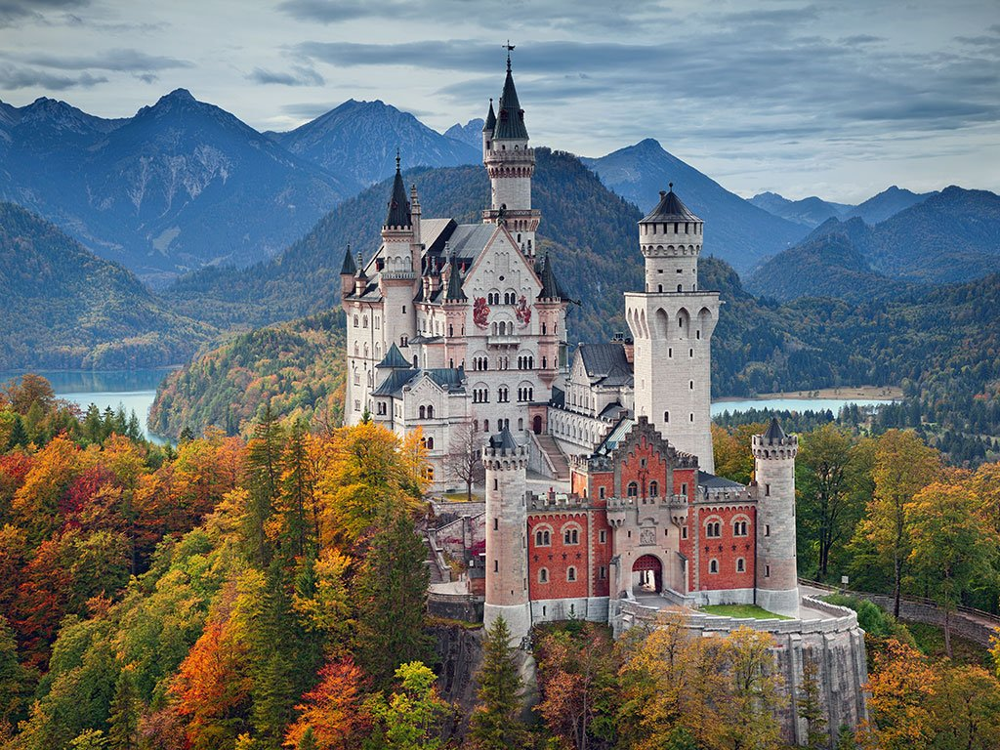
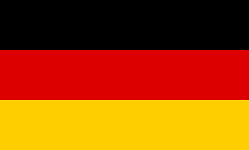

Alemania es un país ubicado en el centro de Europa, conocido por su historia, su cultura y sus importantes avances tecnológicos. Su capital es Berlín y su idioma oficial es el alemán. Es un país con muchas tradiciones, festivales y comidas típicas, como las salchichas, los pretzels y el famoso strudel de manzana. También es reconocido mundialmente por su música clásica, sus escritores y sus grandes inventos.
Alemania tiene paisajes muy variados, desde montañas y bosques hasta ríos, lagos y ciudades modernas. Uno de sus lugares más conocidos es la Puerta de Brandeburgo, en Berlín. También se destaca el castillo de Neuschwanstein y la Selva Negra, famosa por sus paisajes naturales. Además, el país recibe muchos turistas durante el año, especialmente en celebraciones como el Oktoberfest, una fiesta tradicional de origen alemán.

Einigkeit und Recht und Freiheit
Für das deutsche Vaterland!
Danach lasst uns alle streben
Brüderlich mit Herz und Hand!
Einigkeit und Recht und Freiheit
Sind des Glückes Unterpfand;
Blüh im Glanze dieses Glückes,
Blühe, deutsches Vaterland!
